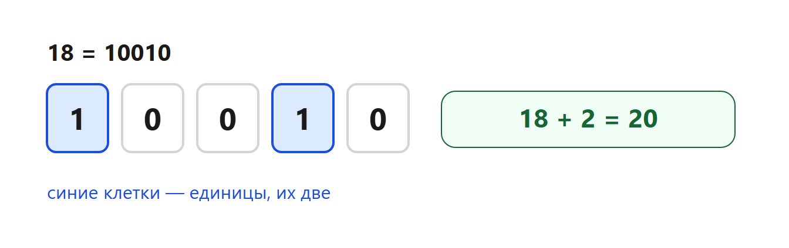
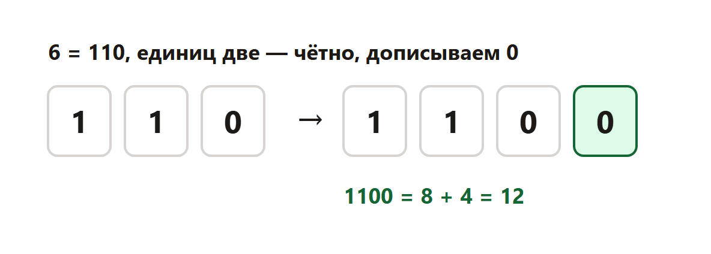

Страница для проверки. Сверху теория со схемами, ниже задания. Разбор всех задач — внизу, по шагам.
Что дают в задании 5
Дают короткий алгоритм: что сделать с числом N. Нужно найти само число или результат. Обычно просят наименьшее подходящее N.
Часто число переводят в двоичную запись: делят на 2 и собирают остатки снизу вверх.
Два приёма, которые здесь разбираем
Приём А. К числу прибавляют, сколько в его двоичной записи единиц. Единица — это цифра 1, не само число.
Приём Б. Смотрят, чётное ли количество единиц. Если чётное — справа дописывают 0. Если нечётное — дописывают 1. Потом эту новую запись снова читают как двоичное число.
Дописать 0 справа — всё равно что умножить число на 2. Дописать 1 — умножить на 2 и прибавить 1.
Задача 1. Приём А для числа 18

18 делим на 2: остатки снизу вверх дают 10010. Единиц две. Результат 18 + 2 = 20.
Ответ: 20.
Задача 2. Наименьшее N не меньше 10, у которого результат делится на 5
Снова приём А: R = N + (сколько единиц в двоичной записи).
Решение. Идём от 10 вверх и останавливаемся на первом подходящем.
16 = 10000, одна единица, R = 17. На 5 не делится.
17 = 10001, две единицы, R = 19. На 5 не делится.
18 = 10010, две единицы, R = 20. 20 делится на 5.
Ответ: 18.
Задача 3. Приём Б для числа 6

6 = 110. Единиц две, это чётное число, справа пишем 0. Получается 1100.
1100 — это 8 + 4 = 12.
Ответ: 12.
Задача 4. Наименьшее N, у которого результат больше 40
Снова приём Б: дописать 0 или 1 по чётности единиц.
Решение.
19 = 10011, единиц три, нечётное, дописываем 1. 100111 = 39. Это ещё не больше 40.
20 = 10100, единиц две, чётное, дописываем 0. 101000 = 40. «Больше 40» ещё не выполнено.
21 = 10101, единиц три, дописываем 1. 101011 = 43. Уже больше 40.
Ответ: 21.
Приём из демоверсии 2026
К двоичной записи числа дописывают цифры по остатку от деления на 3.
Если N делится на 3, справа дописывают три последние двоичные цифры.
Если не делится, остаток умножают на 3, переводят в двоичную запись и дописывают справа.
Проверка на числах из демоверсии: 12 = 1100, делится на 3, дописывают 100, получается 100. Число 4 = 100, остаток 1, дописывают 11, получается 19.
Наименьшее N, у которого результат не меньше 200.
24 = 11000, делится на 3, дописывают 000. Результат 192. Это ещё меньше 200.
25 = 11001, остаток 1, дописывают 11. Результат 103.
Неверно. 18 записывается как 1111 — 1111 — это 15.
Ответ: Число делят на 2, остатки читают снизу вверх; В алгоритме считают цифры 1, а не величину числа; 18 записывается как 10010.
2. Прибавить единицы
Верно. К N прибавляют количество единиц в двоичной записи — Это и есть приём А.
Верно. Для 18 результат равен 20 — 10010, две единицы, 18 + 2.
Верно. Для 16 результат равен 17 — 10000, одна единица, 16 + 1.
Неверно. Для 18 результат равен 18, единицы не прибавляют — Единицы как раз прибавляют.
Ответ: К N прибавляют количество единиц в двоичной записи; Для 18 результат равен 20; Для 16 результат равен 17.
3. Дописать цифру
Верно. Если единиц чётное число, справа пишут 0 — У 110 единиц две, дописывают 0.
Верно. Если единиц нечётное число, справа пишут 1 — У 10101 единиц три, дописывают 1.
Верно. Дописать 0 справа — то же, что умножить число на 2 — 110 было 6, 1100 стало 12.
Неверно. Дописать 0 справа — то же, что прибавить 2 — Это умножение на 2, не прибавление двойки.
Ответ: Если единиц чётное число, справа пишут 0; Если единиц нечётное число, справа пишут 1; Дописать 0 справа — то же, что умножить число на 2.
4. Поиск наименьшего
Верно. Кандидатов проверяют по возрастанию — Останавливаются на первом подходящем.
Верно. Для 20 результат равен 40, условие ещё ложно — Нужно строго больше 40.
Верно. Для 21 результат равен 43 — 10101, дописали 1, получили 101011.
Неверно. Для 19 результат равен 43 — 19 даёт 39.
Ответ: Кандидатов проверяют по возрастанию; Для 20 результат равен 40, условие ещё ложно; Для 21 результат равен 43.
5. Число и результат
Верно. Само число N и результат алгоритма — разные числа — Для 18 результат 20, в ответ может просить любое из них.
Верно. Часто в ответе пишут наименьшее N, а не результат — Читают, что именно просят.
Верно. Алгоритм нужно прогнать на конкретном N — Соседние числа дают другой результат.
Неверно. В ответ всегда пишут 0 — Ответ зависит от условия.
Ответ: Само число N и результат алгоритма — разные числа; Часто в ответе пишут наименьшее N, а не результат; Алгоритм нужно прогнать на конкретном N.
6. Единицы в 10010
В записи 10010 две цифры 1.
Нули не считаем.
Ответ: 2.
7. Результат для 18
18 = 10010.
Единиц две.
18 + 2 = 20.
Ответ: 20.
8. Результат для 6
6 = 110, единиц две, число чётное.
Справа дописываем 0: 1100.
1100 = 8 + 4 = 12.
Ответ: 12.
9. Наименьшее N, делится на 5
16 даёт 17, на 5 не делится.
17 даёт 19, на 5 не делится.
18 даёт 20, 20 делится на 5.
20 тоже подошло бы, но оно больше 18.
Ответ: 18.
10. Наименьшее N больше 40
19 даёт 39.
20 даёт 40, это ещё не больше 40.
21 даёт 43.
43 — это результат, а спрашивают само N.
Ответ: 21.
11. Приём А, число 18
18 = 10010.
Единиц две.
18 + 2 = 20.
Ответ: 20.
12. Наименьшее N от 10
16 = 10000, одна единица, результат 17.
17 = 10001, две единицы, результат 19.
18 = 10010, две единицы, результат 20. 20 делится на 5.
Ответ: 18.
13. Приём Б, число 6
6 = 110, единиц две.
Дописываем 0: 1100.
1100 = 12.
Ответ: 12.
14. Наименьшее N больше 40
19 = 10011, единиц три, дописываем 1, получается 39.
20 = 10100, единиц две, дописываем 0, получается 40.
21 = 10101, единиц три, дописываем 1, получается 43.
Ответ: 21.
15. Приём Б, число 13
13 = 1101, единиц три, это нечётное число.
Справа дописываем 1: 11011.
11011 = 16 + 8 + 2 + 1 = 27.
Ответ: 27.
Три прототипа алгоритма
Приём А прибавляет к числу количество единиц в двоичной записи. Приём Б дописывает справа 0, если единиц чётно, и 1, если нечётно. Третий прототип — из демоверсии: хвост дописывают по остатку от деления на 3.
Если просят наименьшее N, не угадывают. Идут от нижней границы вверх и останавливаются на первом подходящем. В ответ смотрят, что спросили: само N или результат алгоритма. Это разные числа.
Функция to_bin повторяет ручной способ: делим на 2, остатки переворачиваем.
Рабочие программы к этому уроку
Каждый фрагмент запускается отдельно. В конце он печатает ответ. Комментарии на русском говорят, какая строка за что отвечает.
Приём А: к числу прибавляют количество единиц в двоичной записи.
def to_bin(n):
# Делим на 2 и собираем остатки. Потом переворачиваем:
# последний остаток — это старшая цифра.
digits = []
x = n
while x > 0:
digits.append(str(x % 2))
x //= 2
digits.reverse()
return "".join(digits)
n = 18 # МЕНЯТЬ: число из условия
record = to_bin(n)
units = record.count("1") # считаем цифры 1, не величину числа
print(n + units)
Что менять, если условие другое.
n = 18 # МЕНЯТЬ: число из условия
Печать в конце оставляют: это и есть ответ.
Программа печатает 20.
Приём А и поиск наименьшего N перебором вверх.
def to_bin(n):
digits = []
x = n
while x > 0:
digits.append(str(x % 2))
x //= 2
digits.reverse()
return "".join(digits)
def priem_a(n):
# Приём А: к числу прибавляют количество единиц.
return n + to_bin(n).count("1")
n = 10 # МЕНЯТЬ: нижняя граница перебора
while True:
result = priem_a(n)
if result % 5 == 0: # МЕНЯТЬ: условие на результат
print(n) # в ответ часто просят само N, не result
break
n += 1
Что менять, если условие другое.
n = 10 # МЕНЯТЬ: нижняя граница перебора
if result % 5 == 0: # МЕНЯТЬ: условие на результат
Печать в конце оставляют: это и есть ответ.
Программа печатает 18.
Приём Б: справа дописывают 0 или 1 по чётности единиц.
def to_bin(n):
digits = []
x = n
while x > 0:
digits.append(str(x % 2))
x //= 2
digits.reverse()
return "".join(digits)
def priem_b(n):
record = to_bin(n)
units = record.count("1")
# Чётное число единиц — дописываем 0, нечётное — 1.
if units % 2 == 0:
record += "0"
else:
record += "1"
# Дописать 0 справа — умножить на 2. Дописать 1 — умножить на 2 и +1.
return int(record, 2)
n = 6 # МЕНЯТЬ: число из условия
print(priem_b(n))
Что менять, если условие другое.
n = 6 # МЕНЯТЬ: число из условия
Печать в конце оставляют: это и есть ответ.
Программа печатает 12.
Приём Б и поиск наименьшего N, у которого результат больше порога.
def to_bin(n):
digits = []
x = n
while x > 0:
digits.append(str(x % 2))
x //= 2
digits.reverse()
return "".join(digits)
def priem_b(n):
record = to_bin(n)
if record.count("1") % 2 == 0:
record += "0"
else:
record += "1"
return int(record, 2)
n = 1 # МЕНЯТЬ: откуда начинать поиск
while True:
result = priem_b(n)
if result > 40: # МЕНЯТЬ: порог. «Больше 40» — это не «не меньше 40»
print(n)
break
n += 1
Что менять, если условие другое.
n = 1 # МЕНЯТЬ: откуда начинать поиск
if result > 40: # МЕНЯТЬ: порог. «Больше 40» — это не «не меньше 40»
Печать в конце оставляют: это и есть ответ.
Программа печатает 21.
Приём Б: справа дописывают 0 или 1 по чётности единиц.
def to_bin(n):
digits = []
x = n
while x > 0:
digits.append(str(x % 2))
x //= 2
digits.reverse()
return "".join(digits)
def priem_b(n):
record = to_bin(n)
units = record.count("1")
if units % 2 == 0:
record += "0"
else:
record += "1"
return int(record, 2)
n = 13 # МЕНЯТЬ: число из условия
print(priem_b(n))
Что менять, если условие другое.
n = 13 # МЕНЯТЬ: число из условия
Печать в конце оставляют: это и есть ответ.
Программа печатает 27.
Демоверсия: дописать хвост двоичной записи по остатку от деления на 3.
def to_bin(n):
digits = []
x = n
while x > 0:
digits.append(str(x % 2))
x //= 2
digits.reverse()
return "".join(digits) if digits else "0"
def demo(n):
record = to_bin(n)
if n % 3 == 0:
# Делится на 3: дописываем три последние двоичные цифры.
record += record[-3:]
else:
# Не делится: остаток * 3, эту запись дописываем справа.
extra = to_bin((n % 3) * 3)
record += extra
return int(record, 2)
n = 1
while True:
if demo(n) >= 200: # МЕНЯТЬ: порог результата
print(n)
break
n += 1